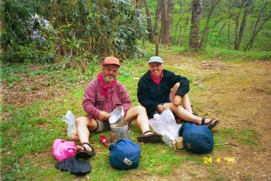
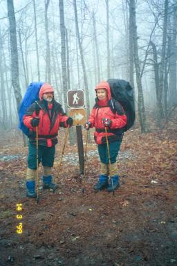

We are Marielle and Paul.

In 1999 we hiked 1760 miles from Georgia to New Hampshire in 5 months. In 2000 we hiked 3 weeks in the Whites and Mahoosucs. In 2001 we did a section of Maine and we completed the trail in 2002.
<